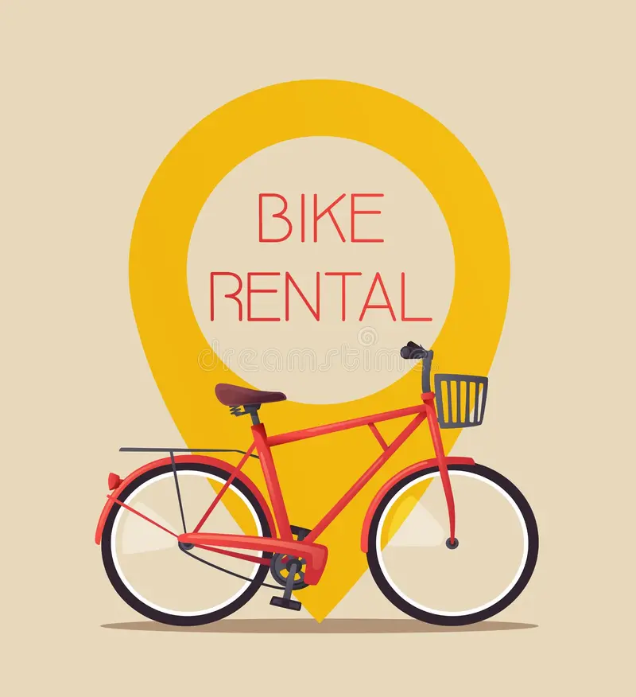

Descubre Medellín sobre ruedas
¡Bienvenido! Alquila una bicicleta y descubre Medellín sobre ruedas. Encuentra aquí nuestra ubicación.

¿Quiénes somos?
Somos un emprendimiento de Medellín dedicado al alquiler de bicicletas y a ofrecer una experiencia de movilidad sostenible y emocionante.
Nuestros servicios
Alquiler de bicicletas
Elige una bicicleta para recorrer la ciudad por horas o por días. (*El alquiler incluye casco y candado).
Recorridos guiados
Conoce lugares destacados de Medellín acompañado por guías locales.
¿Cómo alquilar?
- Elige el tipo de bicicleta.
- Indica el día y la duración del alquiler.
- Presenta un documento de identidad.
- Recoge la bicicleta y disfruta el recorrido. Registate aqui:
Beneficios:
- Casco y candado incluidos.
- Bicicletas revisadas antes de cada alquiler.
- Opciones para distintos tipos de recorrido.